Genetics is the study of heredity. Johann Gregor Mendel set the framework for genetics long before chromosomes or genes had been identified, at a time when meiosis was not well understood. Mendel selected a simple biological system and conducted methodical, quantitative analyses using large sample sizes. Because of Mendel's work, the fundamental principles of heredity were revealed. We now know that genes, carried on chromosomes, are the basic functional units of heredity with the ability to be replicated, expressed, or mutated. Today, the postulates put forth by Mendel form the basis of classical, or Mendelian, genetics. Not all traits are transmitted from parents to offspring according to Mendelian genetics, but Mendel's experiments serve as an excellent starting point for thinking about inheritance.
- Explain the scientific reasons for the success of Mendel's experimental work
- Describe the expected outcomes of monohybrid crosses involving dominant and recessive alleles
- Explain the relationship between genotypes and phenotypes in dominant and recessive gene systems
- Use a Punnett square to calculate the expected proportions of genotypes and phenotypes in a monohybrid cross
- Explain Mendel's law of segregation and independent assortment in terms of genetics and the events of meiosis
- Explain the purpose and methods of a test cross
- Identify non-Mendelian inheritance patterns such as incomplete dominance, codominance, multiple alleles, and sex linkage from the results of crosses
- Explain the effect of linkage and recombination on gamete genotypes
- Explain the phenotypic outcomes of epistatic effects among genes
| # | Lesson | Key Concepts | Source |
|---|---|---|---|
| 1 | Mendel's Experiments | Mendel's biography, true-breeding, P/F1/F2 generations, seven characteristics, dominant and recessive traits | CB 8.1 |
| 2 | Laws of Inheritance — Alleles & Punnett Squares | Genes, alleles, phenotype, genotype, homozygous, heterozygous, Law of Dominance, monohybrid cross, Punnett square, Law of Segregation | CB 8.2 |
| 3 | Laws of Inheritance — Test Crosses & Independent Assortment | Test cross, Law of Independent Assortment, dihybrid cross | CB 8.2 |
| 4 | Extensions of Inheritance — Dominance Variations | Incomplete dominance, codominance, multiple alleles, sex-linked traits | CB 8.3 |
| 5 | Extensions of Inheritance — Linkage & Epistasis | Linked genes, recombination, epistasis, polygenic inheritance | CB 8.3 |
| 6 | Practice Test | All topics — comprehensive assessment | All |
| Standard | Description | Lessons |
|---|---|---|
| BIO.6a | Mendel's laws of heredity | 1, 2, 3 |
| BIO.6b | Monohybrid and dihybrid crosses using Punnett squares | 2, 3 |
| BIO.6c | Extensions of Mendelian genetics including incomplete dominance, codominance, multiple alleles, and sex-linkage | 4, 5 |
- Explain the scientific reasons for the success of Mendel's experimental work
- Describe the expected outcomes of monohybrid crosses involving dominant and recessive alleles
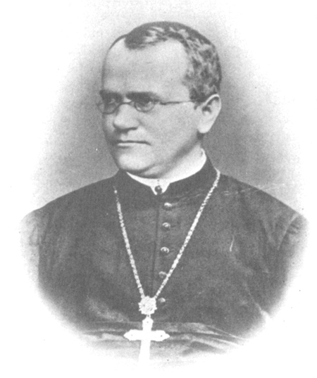
Johann Gregor Mendel (1822–1884) (Figure 8.2) was a lifelong learner, teacher, scientist, and man of faith. As a young adult, he joined the Augustinian Abbey of St. Thomas in Brno in what is now the Czech Republic. Supported by the monastery, he taught physics, botany, and natural science courses at the secondary and university levels. In 1856, he began a decade-long research pursuit involving inheritance patterns in honeybees and plants, ultimately settling on pea plants as his primary model system (a system with convenient characteristics that is used to study a specific biological phenomenon to gain understanding to be applied to other systems). In 1865, Mendel presented the results of his experiments with nearly 30,000 pea plants to the local natural history society. He demonstrated that traits are transmitted faithfully from parents to offspring in specific patterns. In 1866, he published his work, Experiments in Plant Hybridization, in the proceedings of the Natural History Society of Brünn. As stated earlier, in genetics, "parent" is often used to describe the individual organism(s) that contribute genetic material to an offspring, usually in the form of gamete cells.
Mendel's work went virtually unnoticed by the scientific community, which incorrectly believed that the process of inheritance involved a blending of parental traits that produced an intermediate physical appearance in offspring. This hypothetical process appeared to be correct because of what we know now as continuous variation. Continuous variation is the range of small differences we see among individuals in a characteristic like human height. It does appear that offspring are a "blend" of their parents' traits when we look at characteristics that exhibit continuous variation. Mendel worked instead with traits that show discontinuous variation. Discontinuous variation is the variation seen among individuals when each individual shows one of two—or a very few—easily distinguishable traits, such as violet or white flowers. Mendel's choice of these kinds of traits allowed him to see experimentally that the traits were not blended in the offspring as would have been expected at the time, but that they were inherited as distinct traits. In 1868, Mendel became abbot of the monastery and exchanged his scientific pursuits for his pastoral duties. He was not recognized for his extraordinary scientific contributions during his lifetime; in fact, it was not until 1900 that his work was rediscovered, reproduced, and revitalized by scientists on the brink of discovering the chromosomal basis of heredity.
Mendel's seminal work was accomplished using the garden pea, Pisum sativum, to study inheritance. This species naturally self-fertilizes, meaning that pollen encounters ova within the same flower. Because every pea plant has both male reproductive organs and female reproductive organs, each plant produces both types of gametes required for reproduction—both pollen and ova. In plants, just as in animals, reproductive organs are classified by the size of the gametes produced. The organs producing the smaller pollen are called male reproductive organs, while the organs producing the larger ova are called female reproductive organs.
In garden peas, the flower petals remain sealed tightly until pollination is completed to prevent the pollination of other plants. The result is highly inbred, or "true-breeding," pea plants. These are plants that always produce offspring that look like the parent. By experimenting with true-breeding pea plants, Mendel avoided the appearance of unexpected traits in offspring that might occur if the plants were not true-breeding. The garden pea also grows to maturity within one season, meaning that several generations could be evaluated over a relatively short time. Finally, large quantities of garden peas could be cultivated simultaneously, allowing Mendel to conclude that his results did not come about simply by chance.
Mendel performed hybridizations, which involve mating two true-breeding individuals that have different traits. In the pea, which is naturally self-pollinating, this is done by manually transferring pollen from the anther of a mature pea plant of one variety to the stigma of a separate mature pea plant of the second variety.
Plants used in first-generation crosses were called P, or parental generation, plants (Figure 8.3). Mendel collected the seeds produced by the P plants that resulted from each cross and grew them the following season. These offspring were called the F1, or the first filial (filial = daughter or son), generation. Once Mendel examined the characteristics in the F1 generation of plants, he allowed them to self-fertilize naturally. He then collected and grew the seeds from the F1 plants to produce the F2, or second filial, generation. Mendel's experiments extended beyond the F2 generation to the F3 generation, F4 generation, and so on, but it was the ratio of characteristics in the P, F1, and F2 generations that were the most intriguing and became the basis of Mendel's postulates.

In his 1865 publication, Mendel reported the results of his crosses involving seven different characteristics, each with two contrasting traits. A trait is defined as a variation in the physical appearance of a heritable characteristic. The characteristics included plant height, seed texture, seed color, flower color, pea-pod size, pea-pod color, and flower position. For the characteristic of flower color, for example, the two contrasting traits were white versus violet. To fully examine each characteristic, Mendel generated large numbers of F1 and F2 plants and reported results from thousands of F2 plants.
What results did Mendel find in his crosses for flower color? First, Mendel confirmed that he was using plants that bred true for white or violet flower color. Irrespective of the number of generations that Mendel examined, all self-crossed offspring of parents with white flowers had white flowers, and all self-crossed offspring of parents with violet flowers had violet flowers. In addition, Mendel confirmed that, other than flower color, the pea plants were physically identical. This was an important check to make sure that the two varieties of pea plants only differed with respect to one trait, flower color.
Once these validations were complete, Mendel applied the pollen from a plant with violet flowers to the stigma of a plant with white flowers. After gathering and sowing the seeds that resulted from this cross, Mendel found that 100 percent of the F1 hybrid generation had violet flowers. Conventional wisdom at that time would have predicted the hybrid flowers to be pale violet or for hybrid plants to have equal numbers of white and violet flowers. In other words, the contrasting parental traits were expected to blend in the offspring. Instead, Mendel's results demonstrated that the white flower trait had completely disappeared in the F1 generation.
Importantly, Mendel did not stop his experimentation there. He allowed the F1 plants to self-fertilize and found that 705 plants in the F2 generation had violet flowers and 224 had white flowers. This was a ratio of 3.15 violet flowers to one white flower, or approximately 3:1. Mendel performed an additional experiment to ascertain differences in inheritance of traits carried in the pollen versus the ovum. When Mendel transferred pollen from a plant with violet flowers to fertilize the ova of a plant with white flowers and vice versa, he obtained approximately the same ratio irrespective of which gamete contributed which trait. This is called a reciprocal cross—a paired cross in which the respective traits of the male and female in one cross become the respective traits of the female and male in the other cross. For the other six characteristics that Mendel examined, the F1 and F2 generations behaved in the same way that they behaved for flower color. One of the two traits would disappear completely from the F1 generation, only to reappear in the F2 generation at a ratio of roughly 3:1 (Figure 8.4).
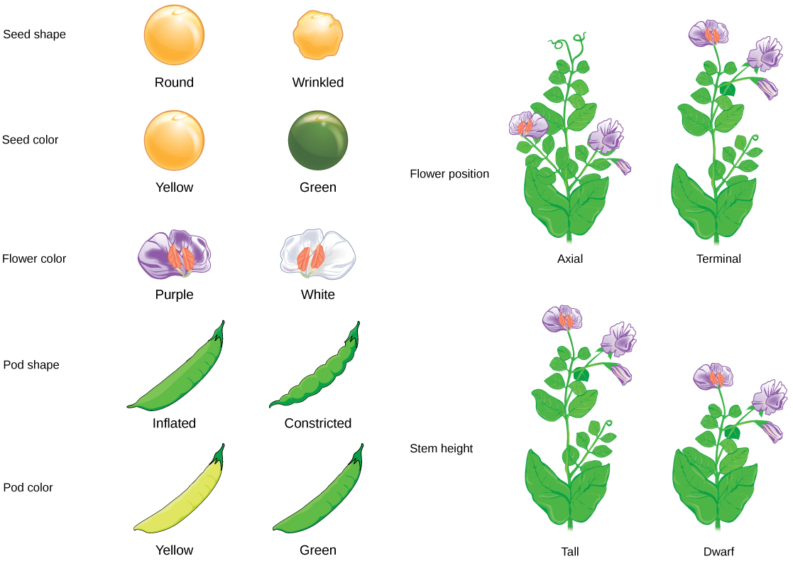
Upon compiling his results for many thousands of plants, Mendel concluded that the characteristics could be divided into expressed and latent traits. He called these dominant and recessive traits, respectively. Dominant traits are those that are inherited unchanged in a hybridization. Recessive traits become latent, or disappear in the offspring of a hybridization. The recessive trait does, however, reappear in the progeny of the hybrid offspring. An example of a dominant trait is the violet-colored flower trait. For this same characteristic (flower color), white-colored flowers are a recessive trait. The fact that the recessive trait reappeared in the F2 generation meant that the traits remained separate (and were not blended) in the plants of the F1 generation. Mendel proposed that this was because the plants possessed two copies of the trait for the flower-color characteristic, and that each parent transmitted one of their two copies to their offspring, where they came together. Moreover, the physical observation of a dominant trait could mean that the genetic composition of the organism included two dominant versions of the characteristic, or that it included one dominant and one recessive version. Conversely, the observation of a recessive trait meant that the organism lacked any dominant versions of this characteristic.
Explain why Mendel chose the garden pea as his model system and describe what he discovered about the inheritance of flower color through the F1 and F2 generations.
- Explain the relationship between genotypes and phenotypes in dominant and recessive gene systems
- Use a Punnett square to calculate the expected proportions of genotypes and phenotypes in a monohybrid cross
- Explain Mendel's law of segregation and independent assortment in terms of genetics and the events of meiosis
- Explain the purpose and methods of a test cross
The seven characteristics that Mendel evaluated in his pea plants were each expressed as one of two versions, or traits. Mendel deduced from his results that each individual had two discrete copies of the characteristic that are passed individually to offspring. We now call those two copies genes, which are carried on chromosomes. The reason we have two copies of each gene is that we inherit one from each parent. In fact, it is the chromosomes we inherit and the two copies of each gene are located on paired chromosomes. Recall that in meiosis these chromosomes are separated out into haploid gametes. This separation, or segregation, of the homologous chromosomes means also that only one of the copies of the gene gets moved into a gamete. The offspring are formed when that gamete unites with one from another parent and the two copies of each gene (and chromosome) are restored.
For cases in which a single gene controls a single characteristic, a diploid organism has two genetic copies that may or may not encode the same version of that characteristic. For example, one individual may carry a gene that determines white flower color and a gene that determines violet flower color. Gene variants that arise by mutation and exist at the same relative locations on homologous chromosomes are called alleles. Mendel examined the inheritance of genes with just two allele forms, but it is common to encounter more than two alleles for any given gene in a natural population.
Two alleles for a given gene in a diploid organism are expressed and interact to produce physical characteristics. The observable traits expressed by an organism are referred to as its phenotype. An organism's underlying genetic makeup, consisting of both the physically visible and the non-expressed alleles, is called its genotype. Mendel's hybridization experiments demonstrate the difference between phenotype and genotype. For example, the phenotypes that Mendel observed in his crosses between pea plants with differing traits are connected to the diploid genotypes of the plants in the P, F1, and F2 generations. We will use a second trait that Mendel investigated, seed color, as an example. Seed color is governed by a single gene with two alleles. The yellow-seed allele is dominant and the green-seed allele is recessive. When true-breeding plants were cross-fertilized, in which one parent had yellow seeds and one had green seeds, all of the F1 hybrid offspring had yellow seeds. That is, the hybrid offspring were phenotypically identical to the true-breeding parent with yellow seeds. However, we know that the allele donated by the parent with green seeds was not simply lost because it reappeared in some of the F2 offspring (Figure 8.5). Therefore, the F1 plants must have been genotypically different from the parent with yellow seeds.

The P plants that Mendel used in his experiments were each homozygous for the trait he was studying. Diploid organisms that are homozygous for a gene have two identical alleles, one on each of their homologous chromosomes. The genotype is often written as YY or yy, for which each letter represents one of the two alleles in the genotype. The dominant allele is capitalized and the recessive allele is lower case. The letter used for the gene (seed color in this case) is usually related to the dominant trait (yellow allele, in this case, or "Y"). Mendel's parental pea plants always bred true because both produced gametes carried the same allele. When P plants with contrasting traits were cross-fertilized, all of the offspring were heterozygous for the contrasting trait, meaning their genotype had different alleles for the gene being examined. For example, the F1 yellow plants that received a Y allele from their yellow parent and a y allele from their green parent had the genotype Yy.
Our discussion of homozygous and heterozygous organisms brings us to why the F1 heterozygous offspring were identical to one of the parents, rather than expressing both alleles. In all seven pea-plant characteristics, one of the two contrasting alleles was dominant, and the other was recessive. Mendel called the dominant allele the expressed unit factor; the recessive allele was referred to as the latent unit factor. We now know that these so-called unit factors are actually genes on homologous chromosomes. For a gene that is expressed in a dominant and recessive pattern, homozygous dominant and heterozygous organisms will look identical (that is, they will have different genotypes but the same phenotype), and the traits of the recessive allele will only be observed in homozygous recessive individuals (Table 8.1).
| Homozygous | Heterozygous | Homozygous | |
|---|---|---|---|
| Genotype | YY | Yy | yy |
| Phenotype | yellow | yellow | green |
Mendel's law of dominance states that in a heterozygote, one trait will conceal the presence of another trait for the same characteristic. For example, when crossing true-breeding violet-flowered plants with true-breeding white-flowered plants, all of the offspring were violet-flowered, even though they all had one allele for violet and one allele for white. Rather than both alleles contributing to a phenotype, the dominant allele will be expressed exclusively. The recessive allele will remain latent, but will be transmitted to offspring in the same manner as that by which the dominant allele is transmitted. The recessive trait will only be expressed by offspring that have two copies of this allele (Figure 8.6), and these offspring will breed true when self-crossed.
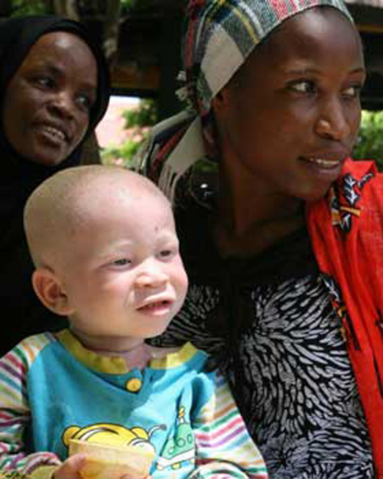
When fertilization occurs between two true-breeding parents that differ by only the characteristic being studied, the process is called a monohybrid cross, and the resulting offspring are called monohybrids. Mendel performed seven types of monohybrid crosses, each involving contrasting traits for different characteristics. Out of these crosses, all of the F1 offspring had the phenotype of one parent, and the F2 offspring had a 3:1 phenotypic ratio. On the basis of these results, Mendel postulated that each parent in the monohybrid cross contributed one of two paired unit factors to each offspring, and every possible combination of unit factors was equally likely.
The results of Mendel's research can be explained in terms of probabilities, which are mathematical measures of likelihood. The probability of an event is calculated by the number of times the event occurs divided by the total number of opportunities for the event to occur. A probability of one (100 percent) for some event indicates that it is guaranteed to occur, whereas a probability of zero (0 percent) indicates that it is guaranteed to not occur, and a probability of 0.5 (50 percent) means it has an equal chance of occurring or not occurring.
To demonstrate this with a monohybrid cross, consider the case of true-breeding pea plants with yellow versus green seeds. The dominant seed color is yellow; therefore, the parental genotypes were YY for the plants with yellow seeds and yy for the plants with green seeds. A Punnett square, devised by the British geneticist Reginald Punnett, is useful for determining probabilities because it is drawn to predict all possible outcomes of all possible random fertilization events and their expected frequencies. Figure 8.9 shows a Punnett square for a cross between a plant with yellow peas and one with green peas. To prepare a Punnett square, all possible combinations of the parental alleles (the genotypes of the gametes) are listed along the top (for one parent) and side (for the other parent) of a grid. The combinations of egg and sperm gametes are then made in the boxes in the table on the basis of which alleles are combining. Each box then represents the diploid genotype of a zygote, or fertilized egg. Because each possibility is equally likely, genotypic ratios can be determined from a Punnett square. If the pattern of inheritance (dominant and recessive) is known, the phenotypic ratios can be inferred as well. For a monohybrid cross of two true-breeding parents, each parent contributes one type of allele. In this case, only one genotype is possible in the F1 offspring. All offspring are Yy and have yellow seeds.
When the F1 offspring are crossed with each other, each has an equal probability of contributing either a Y or a y to the F2 offspring. The result is a 1 in 4 (25 percent) probability of both parents contributing a Y, resulting in an offspring with a yellow phenotype; a 25 percent probability of parent A contributing a Y and parent B a y, resulting in offspring with a yellow phenotype; a 25 percent probability of parent A contributing a y and parent B a Y, also resulting in a yellow phenotype; and a (25 percent) probability of both parents contributing a y, resulting in a green phenotype. When counting all four possible outcomes, there is a 3 in 4 probability of offspring having the yellow phenotype and a 1 in 4 probability of offspring having the green phenotype. This explains why the results of Mendel's F2 generation occurred in a 3:1 phenotypic ratio. Using large numbers of crosses, Mendel was able to calculate probabilities, found that they fit the model of inheritance, and use these to predict the outcomes of other crosses.
Observing that true-breeding pea plants with contrasting traits gave rise to F1 generations that all expressed the dominant trait and F2 generations that expressed the dominant and recessive traits in a 3:1 ratio, Mendel proposed the law of segregation. This law states that paired unit factors (genes) must segregate equally into gametes such that offspring have an equal likelihood of inheriting either factor. For the F2 generation of a monohybrid cross, the following three possible combinations of genotypes result: homozygous dominant, heterozygous, or homozygous recessive. Because heterozygotes could arise from two different pathways (receiving one dominant and one recessive allele from either parent), and because heterozygotes and homozygous dominant individuals are phenotypically identical, the law supports Mendel's observed 3:1 phenotypic ratio. The equal segregation of alleles is the reason we can apply the Punnett square to accurately predict the offspring of parents with known genotypes.
The physical basis of Mendel's law of segregation is the first division of meiosis in which the homologous chromosomes with their different versions of each gene are segregated into daughter nuclei. This process was not understood by the scientific community during Mendel's lifetime (Figure 8.7).
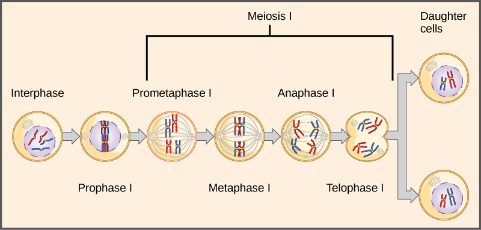
Explain the difference between genotype and phenotype. Then describe how a Punnett square is used to predict the genotypic and phenotypic ratios of a monohybrid cross.
- Explain the purpose and methods of a test cross
- Explain Mendel's law of segregation and independent assortment in terms of genetics and the events of meiosis
- Use a Punnett square to calculate the expected proportions of genotypes and phenotypes in a dihybrid cross
Beyond predicting the offspring of a cross between known homozygous or heterozygous parents, Mendel also developed a way to determine whether an organism that expressed a dominant trait was a heterozygote or a homozygote. Called the test cross, this technique is still used by plant and animal breeders. In a test cross, the dominant-expressing organism is crossed with an organism that is homozygous recessive for the same characteristic. If the dominant-expressing organism is a homozygote, then all F1 offspring will be heterozygotes expressing the dominant trait (Figure 8.8). Alternatively, if the dominant-expressing organism is a heterozygote, the F1 offspring will exhibit a 1:1 ratio of heterozygotes and recessive homozygotes (Figure 8.8). The test cross further validates Mendel's postulate that pairs of unit factors segregate equally.
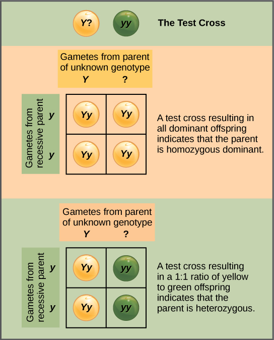

Show Answer
No, you cannot be certain. If the parent plant were heterozygous (Rr), you would expect a 1:1 ratio of round to wrinkled peas. With only three offspring, all round, the sample size is too small to determine with confidence whether the parent is homozygous dominant (RR) or heterozygous (Rr). With RR all offspring would be round; with Rr there is a (1/2)^3 = 1/8 chance all three are round by chance.
Mendel's law of independent assortment states that genes do not influence each other with regard to the sorting of alleles into gametes, and every possible combination of alleles for every gene is equally likely to occur. Independent assortment of genes can be illustrated by the dihybrid cross, a cross between two true-breeding parents that express different traits for two characteristics. Consider the characteristics of seed color and seed texture for two pea plants, one that has wrinkled, green seeds (rryy) and another that has round, yellow seeds (RRYY). Because each parent is homozygous, the law of segregation indicates that the gametes for the wrinkled–green plant all are ry, and the gametes for the round–yellow plant are all RY. Therefore, the F1 generation of offspring all are RrYy (Figure 8.10).
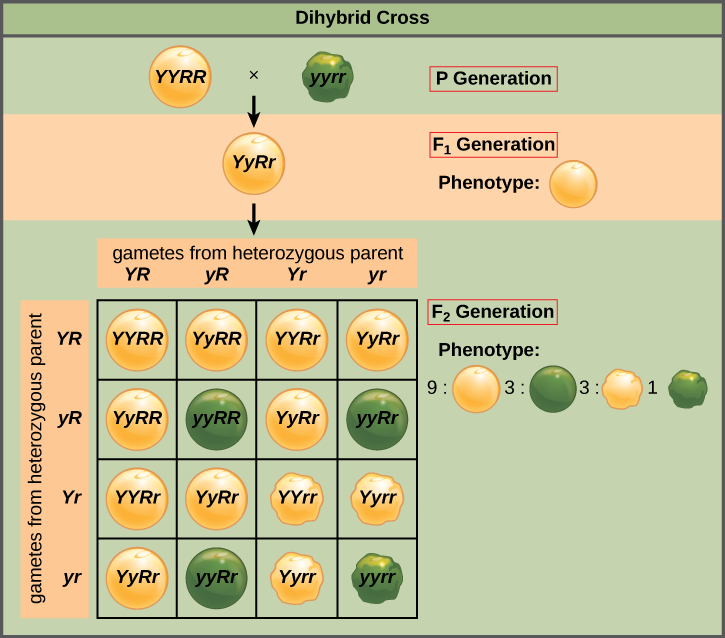
Show Answer
The cross RrYY × rrYy requires a 2 × 2 Punnett square (4 squares). The gametes from RrYY are RY and rY; the gametes from rrYy are rY and ry. The possible genotypes are RrYY, RrYy, rrYY, and rrYy. The phenotypes are round yellow and wrinkled yellow in a 1:1 ratio (all offspring have at least one Y allele, so all are yellow).
The gametes produced by the F1 individuals must have one allele from each of the two genes. For example, a gamete could get an R allele for the seed shape gene and either a Y or a y allele for the seed color gene. It cannot get both an R and an r allele; each gamete can have only one allele per gene. The law of independent assortment states that a gamete into which an r allele is sorted would be equally likely to contain either a Y or a y allele. Thus, there are four equally likely gametes that can be formed when the RrYy heterozygote is self-crossed, as follows: RY, rY, Ry, and ry. Arranging these gametes along the top and left of a 4 × 4 Punnett square (Figure 8.10) gives us 16 equally likely genotypic combinations. From these genotypes, we find a phenotypic ratio of 9 round–yellow:3 round–green:3 wrinkled–yellow:1 wrinkled–green (Figure 8.10). These are the offspring ratios we would expect, assuming we performed the crosses with a large enough sample size.
The physical basis for the law of independent assortment also lies in meiosis I, in which the different homologous pairs line up in random orientations. Each gamete can contain any combination of paternal and maternal chromosomes (and therefore the genes on them) because the orientation of tetrads on the metaphase plane is random (Figure 8.11).

Explain the purpose of a test cross and describe how the law of independent assortment leads to the 9:3:3:1 phenotypic ratio in a dihybrid cross.
- Identify non-Mendelian inheritance patterns such as incomplete dominance, codominance, and multiple alleles from the results of crosses
Mendel studied traits with only one mode of inheritance in pea plants. The inheritance of the traits he studied all followed the relatively simple pattern of dominant and recessive alleles for a single characteristic. There are several important modes of inheritance, discovered after Mendel's work, that do not follow the dominant and recessive, single-gene model.
Mendel's experiments with pea plants suggested that: 1) two types of "units" or alleles exist for every gene; 2) alleles maintain their integrity in each generation (no blending); and 3) in the presence of the dominant allele, the recessive allele is hidden, with no contribution to the phenotype. Therefore, recessive alleles can be "carried" and not expressed by individuals. Such heterozygous individuals are sometimes referred to as "carriers." Since then, genetic studies in other organisms have shown that much more complexity exists, but that the fundamental principles of Mendelian genetics still hold true. In the sections to follow, we consider some of the extensions of Mendelism.
Mendel's results, demonstrating that traits are inherited as dominant and recessive pairs, contradicted the view at that time that offspring exhibited a blend of their parents' traits. However, the heterozygote phenotype occasionally does appear to be intermediate between the two parents. For example, in the snapdragon, Antirrhinum majus (Figure 8.12), a cross between a homozygous parent with white flowers (CWCW) and a homozygous parent with red flowers (CRCR) will produce offspring with pink flowers (CRCW). (Note that different genotypic abbreviations are used for Mendelian extensions to distinguish these patterns from simple dominance and recessiveness.) This pattern of inheritance is described as incomplete dominance, meaning that one of the alleles appears in the phenotype in the heterozygote, but not to the exclusion of the other, which can also be seen. The allele for red flowers is incompletely dominant over the allele for white flowers. However, the results of a heterozygote self-cross can still be predicted, just as with Mendelian dominant and recessive crosses. In this case, the genotypic ratio would be 1 CRCR:2 CRCW:1 CWCW, and the phenotypic ratio would be 1:2:1 for red:pink:white. The basis for the intermediate color in the heterozygote is simply that the pigment produced by the red allele (anthocyanin) is diluted in the heterozygote and therefore appears pink because of the white background of the flower petals.
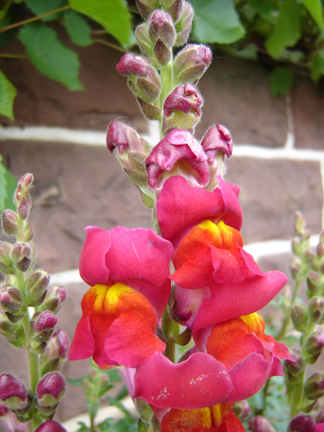
A variation on incomplete dominance is codominance, in which both alleles for the same characteristic are simultaneously expressed in the heterozygote. An example of codominance occurs in the ABO blood groups of humans. The A and B alleles are expressed in the form of A or B molecules present on the surface of red blood cells. Homozygotes (IAIA and IBIB) express either the A or the B phenotype, and heterozygotes (IAIB) express both phenotypes equally. The IAIB individual has blood type AB. In a self-cross between heterozygotes expressing a codominant trait, the three possible offspring genotypes are phenotypically distinct. However, the 1:2:1 genotypic ratio characteristic of a Mendelian monohybrid cross still applies (Figure 8.13).
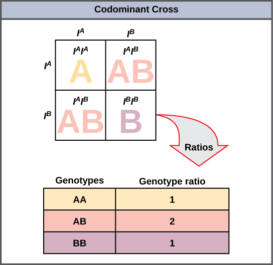
Mendel implied that only two alleles, one dominant and one recessive, could exist for a given gene. We now know that this is an oversimplification. Although individual humans (and all diploid organisms) can only have two alleles for a given gene, multiple alleles may exist at the population level, such that many combinations of two alleles are observed. Note that when many alleles exist for the same gene, the convention is to denote the most common phenotype or genotype in the natural population as the wild type (often abbreviated "+"). All other phenotypes or genotypes are considered variants (mutants) of this typical form, meaning they deviate from the wild type. The variant may be recessive or dominant to the wild-type allele.
An example of multiple alleles is the ABO blood-type system in humans. In this case, there are three alleles circulating in the population. The IA allele codes for A molecules on the red blood cells, the IB allele codes for B molecules on the surface of red blood cells, and the i allele codes for no molecules on the red blood cells. In this case, the IA and IB alleles are codominant with each other and are both dominant over the i allele. Although there are three alleles present in a population, each individual only gets two of the alleles from their parents. This produces the genotypes and phenotypes shown in Figure 8.14. Notice that instead of three genotypes, there are six different genotypes when there are three alleles. The number of possible phenotypes depends on the dominance relationships between the three alleles.
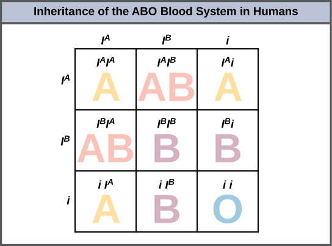
Malaria is a parasitic disease in humans that is transmitted by infected female mosquitoes, including Anopheles gambiae, and is characterized by cyclic high fevers, chills, flu-like symptoms, and severe anemia. Plasmodium falciparum and P. vivax are the most common causative agents of malaria, and P. falciparum is the most deadly. When promptly and correctly treated, P. falciparum malaria has a mortality rate of 0.1 percent. However, in some parts of the world, the parasite has evolved resistance to commonly used malaria treatments, so the most effective malarial treatments can vary by geographic region. Ninety percent of malaria victims live in Africa, most of them children under the age of five.
In Southeast Asia, Africa, and South America, P. falciparum has developed resistance to the anti-malarial drugs chloroquine, mefloquine, and sulfadoxine-pyrimethamine. P. falciparum, which is haploid during the life stage in which it is infective to humans, has evolved multiple drug-resistant mutant alleles of the dhps gene. Varying degrees of sulfadoxine resistance are associated with each of these alleles. Being haploid, P. falciparum needs only one drug-resistant allele to express this trait.
In Southeast Asia, different sulfadoxine-resistant alleles of the dhps gene are localized to different geographic regions. This is a common evolutionary phenomenon that comes about because drug-resistant mutants arise in a population and interbreed with other P. falciparum isolates in close proximity. Sulfadoxine-resistant parasites cause considerable human hardship in regions in which this drug is widely used as an over-the-counter malaria remedy. As is common with pathogens that multiply to large numbers within an infection cycle, P. falciparum evolves relatively rapidly (over a decade or so) in response to the selective pressure of commonly used anti-malarial drugs. For this reason, scientists must constantly work to develop new drugs or drug combinations to combat the worldwide malaria burden.
In late 2021, R21/Matrix-M became the first vaccine to be recommended for widespread use by the World Health Organization. At least ten other candidate vaccines are in development. The effort is an multinational one involving governments, universities, nonprofits, philanthropists, and pharmaceutical companies. Much of the recent progress can be credited to organizations within the most affected countries, such as the Malaria Research and Training Center in Mali. Founded by Ogobara Duombo and Yeya Touré in the 1990s, the center has emerged as a primary front-line research driver, including running many of the critical clinical trials that are so important to vaccine development and approval.
Explain the difference between incomplete dominance and codominance. Use the snapdragon flower color example and the ABO blood type system to illustrate your answer. Why don't these patterns follow simple Mendelian dominance?
- Identify non-Mendelian inheritance patterns such as sex linkage from the results of crosses
- Explain the effect of linkage and recombination on gamete genotypes
- Explain the phenotypic outcomes of epistatic effects among genes
In humans, as well as in many other animals and some plants, the sex of the individual is determined by sex chromosomes—one pair of non-homologous chromosomes. Humans may identify as being male, female, neither of these, both, or other gender(s) independently of these chromosomes, but the sex chromosomes can be associated with certain traits. Until now, we have only considered inheritance patterns among non-sex chromosomes, or autosomes. In addition to 22 homologous pairs of autosomes, human females have a homologous pair of X chromosomes, whereas human males have an XY chromosome pair. Although the Y chromosome contains a small region of similarity to the X chromosome so that they can pair during meiosis, the Y chromosome is much shorter and contains fewer genes. When a gene being examined is present on the X, but not the Y, chromosome, it is X-linked.
Eye color in Drosophila, the common fruit fly, was the first X-linked trait to be identified. Thomas Hunt Morgan mapped this trait to the X chromosome in 1910. Like humans, Drosophila males have an XY chromosome pair, and females are XX. In flies the wild-type eye color is red (XW) and is dominant to white eye color (Xw) (Figure 8.15). Because of the location of the eye-color gene, reciprocal crosses do not produce the same offspring ratios. Males are said to be hemizygous, in that they have only one allele for any X-linked characteristic. Hemizygosity makes descriptions of dominance and recessiveness irrelevant for XY males. Drosophila males lack the white gene on the Y chromosome; that is, their genotype can only be XWY or XwY. In contrast, females have two allele copies of this gene and can be XWXW, XWXw, or XwXw.
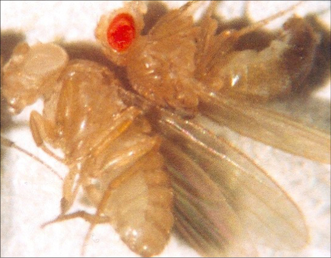
In an X-linked cross, the genotypes of F1 and F2 offspring depend on whether the recessive trait was expressed by the male or the female in the P generation. With respect to Drosophila eye color, when the P male expresses the white-eye phenotype and the female is homozygously red-eyed, all members of the F1 generation exhibit red eyes (Figure 8.16). The F1 females are heterozygous (XWXw), and the males are all XWY, having received their X chromosome from the homozygous dominant P female and their Y chromosome from the P male. A subsequent cross between the XWXw female and the XWY male would produce only red-eyed females (with XWXW or XWXw genotypes) and both red- and white-eyed males (with XWY or XwY genotypes). Now, consider a cross between a homozygous white-eyed female and a male with red eyes. The F1 generation would exhibit only heterozygous red-eyed females (XWXw) and only white-eyed males (XwY). Half of the F2 females would be red-eyed (XWXw) and half would be white-eyed (XwXw). Similarly, half of the F2 males would be red-eyed (XWY) and half would be white-eyed (XwY).
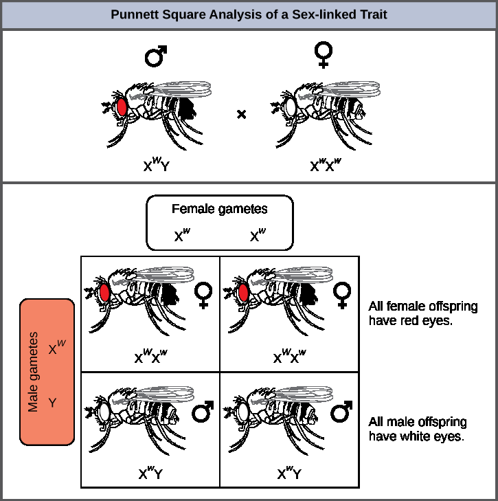
Discoveries in fruit fly genetics can be applied to human genetics. When a female parent is homozygous for a recessive X-linked trait, the parent will pass the trait on to 100 percent of the male offspring, because the males will receive the Y chromosome from the male parent. In humans, the alleles for certain conditions (some color-blindness, hemophilia, and muscular dystrophy) are X-linked. Females who are heterozygous for these diseases are said to be carriers and may not exhibit any phenotypic effects. These females will pass the disease to half of their male offspring and will pass carrier status to half of their female offspring; therefore, X-linked traits appear more frequently in males than females.
In some groups of organisms with sex chromosomes, the sex with the non-homologous sex chromosomes is the female rather than the male. This is the case for all birds. In this case, sex-linked traits will be more likely to appear in the female, in whom they are hemizygous.
Although all of Mendel's pea plant characteristics behaved according to the law of independent assortment, we now know that some allele combinations are not inherited independently of each other. Genes that are located on separate, non-homologous chromosomes will always sort independently. However, each chromosome contains hundreds or thousands of genes, organized linearly on chromosomes like beads on a string. The segregation of alleles into gametes can be influenced by linkage, in which genes that are located physically close to each other on the same chromosome are more likely to be inherited as a pair. However, because of the process of recombination, or "crossover," it is possible for two genes on the same chromosome to behave independently, or as if they are not linked. To understand this, let us consider the biological basis of gene linkage and recombination.
Homologous chromosomes possess the same genes in the same order, though the specific alleles of the gene can be different on each of the two chromosomes. Recall that during interphase and prophase I of meiosis, homologous chromosomes first replicate and then synapse, with like genes on the homologs aligning with each other. At this stage, segments of homologous chromosomes exchange linear segments of genetic material (Figure 8.17). This process is called recombination, or crossover, and it is a common genetic process. Because the genes are aligned during recombination, the gene order is not altered. Instead, the result of recombination is that maternal and paternal alleles are combined onto the same chromosome. Across a given chromosome, several recombination events may occur, causing extensive shuffling of alleles.
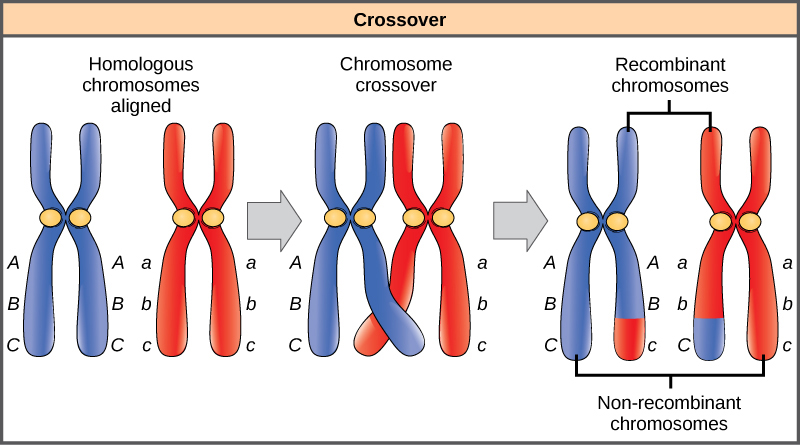
When two genes are located on the same chromosome, they are considered linked, and their alleles tend to be transmitted through meiosis together. To exemplify this, imagine a dihybrid cross involving flower color and plant height in which the genes are next to each other on the chromosome. If one homologous chromosome has alleles for tall plants and red flowers, and the other chromosome has genes for short plants and yellow flowers, then when the gametes are formed, the tall and red alleles will tend to go together into a gamete and the short and yellow alleles will go into other gametes. These are called the parental genotypes because they have been inherited intact from the parents of the individual producing gametes. But unlike if the genes were on different chromosomes, there will be no gametes with tall and yellow alleles and no gametes with short and red alleles. If you create a Punnett square with these gametes, you will see that the classical Mendelian prediction of a 9:3:3:1 outcome of a dihybrid cross would not apply. As the distance between two genes increases, the probability of one or more crossovers between them increases and the genes behave more like they are on separate chromosomes. Geneticists have used the proportion of recombinant gametes (the ones not like the parents) as a measure of how far apart genes are on a chromosome. Using this information, they have constructed linkage maps of genes on chromosomes for well-studied organisms, including humans.
Mendel's seminal publication makes no mention of linkage, and many researchers have questioned whether he encountered linkage but chose not to publish those crosses out of concern that they would invalidate his independent assortment postulate. The garden pea has seven pairs of chromosomes, and some have suggested that his choice of seven characteristics was not a coincidence. However, even if the genes he examined were not located on separate chromosomes, it is possible that he simply did not observe linkage because of the extensive shuffling effects of recombination.
Mendel's studies in pea plants implied that the sum of an individual's phenotype was controlled by genes (or as he called them, unit factors), such that every characteristic was distinctly and completely controlled by a single gene. In fact, single observable characteristics are almost always under the influence of multiple genes (each with two or more alleles) acting in unison. For example, at least eight genes contribute to eye color in humans.
In some cases, several genes can contribute to aspects of a common phenotype without their gene products ever directly interacting. In the case of organ development, for instance, genes may be expressed sequentially, with each gene adding to the complexity and specificity of the organ. Genes may function in complementary or synergistic fashions, such that two or more genes expressed simultaneously affect a phenotype. An apparent example of this occurs with human skin color, which appears to involve the action of at least three (and probably more) genes. Cases in which inheritance for a characteristic like skin color or human height depend on the combined effects of numerous genes are called polygenic inheritance.
Genes may also oppose each other, with one gene suppressing the expression of another. In epistasis, the interaction between genes is antagonistic, such that one gene masks or interferes with the expression of another. "Epistasis" is a word composed of Greek roots meaning "standing upon." The alleles that are being masked or silenced are said to be hypostatic to the epistatic alleles that are doing the masking. Often the biochemical basis of epistasis is a gene pathway in which expression of one gene is dependent on the function of a gene that precedes or follows it in the pathway.
An example of epistasis is pigmentation in mice. The wild-type coat color, agouti (AA) is dominant to solid-colored fur (aa). However, a separate gene C, when present as the recessive homozygote (cc), negates any expression of pigment from the A gene and results in an albino mouse (Figure 8.18). Therefore, the genotypes AAcc, Aacc, and aacc all produce the same albino phenotype. A cross between heterozygotes for both genes (AaCc x AaCc) would generate offspring with a phenotypic ratio of 9 agouti:3 black:4 albino (Figure 8.18). In this case, the C gene is epistatic to the A gene.
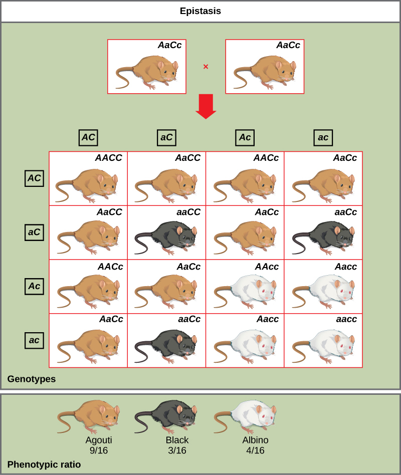
Explain why X-linked recessive traits appear more frequently in males than females. Then describe how genetic linkage violates Mendel's law of independent assortment, and how recombination can restore independent behavior for linked genes.
- Mendel's experiments (true-breeding, P/F1/F2, dominant/recessive, 3:1 ratio) — CB 8.1
- Laws of inheritance (alleles, genotype/phenotype, Punnett squares, Law of Segregation, test cross, Law of Independent Assortment) — CB 8.2
- Extensions of the laws (incomplete dominance, codominance, blood types, sex-linked traits, linkage, epistasis, polygenic inheritance) — CB 8.3